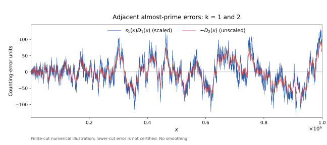

Riemann functions for almost primes
Explore the real-cut functions Rk(x), with k counting prime factors with multiplicity. Enter a rank and a real x; the calculation runs in your browser.
EXPLORATORY — NOT CERTIFIEDCalculate Rk(x)
Prepared quadrature data load on the first calculation.
These changes are sensitivity checks, not upper error bounds. For k ≥ 2, the interval 0 < σ < 1/129 is omitted. Stable displayed digits are not automatically correct digits.
What is being evaluated?
Rk,Q(x) = ∫1/(Q+1)1 Δk(σ) xσ dσ / σ
For k ≥ 2, this is a finite-cut approximation to the complete real-cut definition, not a truncated Selberg asymptotic expansion. The calculator uses Q = 128, tanh–sinh quadrature, a truncated Möbius series for the prime-zeta boundary values, and IEEE double precision. The density and quadrature weights are prepared once; the exponential xσ is evaluated afresh for every input. Nothing is interpolated from the plots.
Rank 1 is evaluated separately by the convergent Gram series for Riemann’s R-function. For floor(x) ≤ 10⁶, the exact count Nk(floor(x)) is also computed by a sieve. Rk is a smooth model and is not itself an exact almost-prime count.
For rigorous values, use a separately validated interval implementation enclosing quadrature, Möbius truncation and the complete lower cut. This demonstration is not the FLINT/Arb certified hybrid.
Adjacent counting-error oscillations

Dk = Rk − Nk. Blue: sk(x)Dk(x). Red: −Dk+1(x). The multiplier comes from the first-zero coefficient model; it is not fitted to these data. Numerical approximants are substituted for R₂ and R₃. The curves are unsmoothed.
Alternation with k is not, by itself, a demonstration of the sieve parity barrier or a route to RH or twin primes. Conditional zero-spectrum results and correlations restricted to shifted primes are different statements.
Reproduce and extend
The core implementation uses NumPy and SciPy and can be loaded in SageMath. It has been executed in Python; the public SageMathCell service is an optional, separate external service.
load("rk_calculator.py")
print(rk_report(k=2, x=10**6, Q=64))
# Generate both plots and export the data:
export_demo(xmax=10**6, step=100, Q=128, h=0.05)